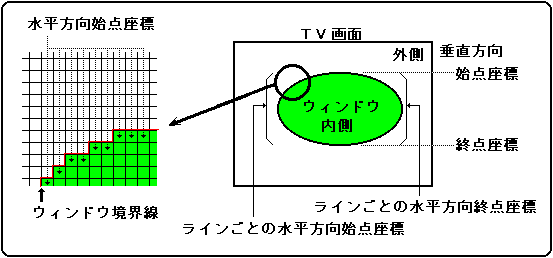

★
HARDWARE Manual★
VDP2ユーザーズマニュアル★
第８章 ウィンドウ
★
HARDWARE Manual★
VDP2ユーザーズマニュアル★
第８章 ウィンドウ
図8.2 ノーマルラインウィンドウ

| +0 | 15 | 14 | 13 | 12 | 11 | 10 | ９ | ８ |
７ | ６ | ５ | ４ | ３ | ２ | １ | ０ |
|---|---|---|---|---|---|---|---|---|---|---|---|---|---|---|---|---|
| 水平方向始点座標 10ビット | ||||||||||||||||
| +2 | 15 | 14 | 13 | 12 | 11 | 10 | ９ | ８ |
７ | ６ | ５ | ４ | ３ | ２ | １ | ０ |
|---|---|---|---|---|---|---|---|---|---|---|---|---|---|---|---|---|
| 水平方向終点座標 10ビット | ||||||||||||||||
|
| 部は無視されます。 |
ビット15 ← バック画面テーブル(VRAM) → 0 | |
|---|---|
| +00H +02H | １ライン目の水平方向始点座標 １ライン目の水平方向終点座標 |
| +04H +06H | ２ライン目の水平方向始点座標 ２ライン目の水平方向終点座標 |
| +08H +0AH | ３ライン目の水平方向始点座標 ３ライン目の水平方向終点座標 |
| : : | : : |
ビット15 ← バック画面テーブル(VRAM) → 0 | |
|---|---|
| +00H +02H | １，２ライン目の水平方向始点座標 １，２ライン目の水平方向終点座標 |
| +04H +06H | ３，４ライン目の水平方向始点座標 ３，４ライン目の水平方向終点座標 |
| +08H +0AH | ５，６ライン目の水平方向始点座標 ５，６ライン目の水平方向終点座標 |
| : : | : : |
WPSXn |
15 | 14 | 13 | 12 | 11 | 10 | ９ | ８ |
７ | ６ | ５ | ４ | ３ | ２ | １ | ０ |
|---|---|---|---|---|---|---|---|---|---|---|---|---|---|---|---|---|
| 任意値(注) | ||||||||||||||||
WPSYn |
15 | 14 | 13 | 12 | 11 | 10 | ９ | ８ |
７ | ６ | ５ | ４ | ３ | ２ | １ | ０ |
|---|---|---|---|---|---|---|---|---|---|---|---|---|---|---|---|---|
| 垂直方向開始ライン 10ビット | ||||||||||||||||
WPEXn |
15 | 14 | 13 | 12 | 11 | 10 | ９ | ８ |
７ | ６ | ５ | ４ | ３ | ２ | １ | ０ |
|---|---|---|---|---|---|---|---|---|---|---|---|---|---|---|---|---|
| 任意値(注) | ||||||||||||||||
WPEYn |
15 | 14 | 13 | 12 | 11 | 10 | ９ | ８ |
７ | ６ | ５ | ４ | ３ | ２ | １ | ０ |
|---|---|---|---|---|---|---|---|---|---|---|---|---|---|---|---|---|
| 垂直方向終了ライン 10ビット | ||||||||||||||||
15 | 14 | 13 | 12 | 11 | 10 | 09 | 08 |
W0LWE |
- |
- |
- |
- |
- |
- |
- |
|---|
07 | 06 | 05 | 04 | 03 | 02 | 01 | 00 |
- |
- |
- |
- |
- |
W0LWTA18 |
W0LWTA17 |
W0LWTA16 |
|---|
15 | 14 | 13 | 12 | 11 | 10 | 09 | 08 |
W0LWTA15 |
W0LWTA14 |
W0LWTA13 |
W0LWTA12 |
W0LWTA11 |
W0LWTA10 |
W0LWTA9 |
W0LWTA8 |
|---|
07 | 06 | 05 | 04 | 03 | 02 | 01 | 00 |
W0LWTA7 |
W0LWTA6 |
W0LWTA5 |
W0LWTA4 |
W0LWTA3 |
W0LWTA2 |
W0LWTA1 |
- |
|---|
15 | 14 | 13 | 12 | 11 | 10 | 09 | 08 |
W1LWE |
- |
- |
- |
- |
- |
- |
- |
|---|
07 | 06 | 05 | 04 | 03 | 02 | 01 | 00 |
- |
- |
- |
- |
- |
W1LWTA18 |
W1LWTA17 |
W1LWTA16 |
|---|
15 | 14 | 13 | 12 | 11 | 10 | 09 | 08 |
W1LWTA15 |
W1LWTA14 |
W1LWTA13 |
W1LWTA12 |
W1LWTA11 |
W1LWTA10 |
W1LWTA9 |
W1LWTA8 |
|---|
07 | 06 | 05 | 04 | 03 | 02 | 01 | 00 |
W1LWTA7 |
W1LWTA6 |
W1LWTA5 |
W1LWTA4 |
W1LWTA3 |
W1LWTA2 |
W1LWTA1 |
- |
|---|
| W0LWE | 1800D8H | ビット15 | W0用 |
| W1LWE | 1800DCH | ビット15 | W1用 |
| WxLWE | 処 理 |
|---|---|
0 | ノーマルウィンドウをラインウィンドウにしない |
1 | ノーマルウィンドウをラインウィンドウにする |
| W0LWTA18〜W0LWTA16 | 1800D8H | ビット2〜0 | W0用 |
| W0LWTA15〜W0LWTA1 | 1800DAH | ビット15〜1 | W0用 |
| W1LWTA18〜W1LWTA16 | 1800DCH | ビット2〜0 | W1用 |
| W1LWTA15〜W1LWTA1 | 1800DEH | ビット15〜1 | W1用 |
(ラインウィンドウテーブルの先頭アドレス)
＝(ラインウィンドウテーブルアドレスレジスタ値18ビット)×4Ｈ
★
HARDWARE Manual★
VDP2ユーザーズマニュアル★
第８章 ウィンドウ